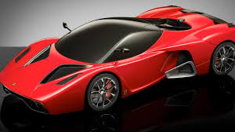
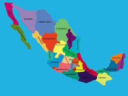

Quienes son ?
El break-dance es un baile urbano, en constante evolución y con un alto nivel de dificultad en su ejecución. Brincos acrobáticos, contorsiones que desafían la gravedad y giros improvisados sobre las partes del cuerpo más inverosímiles; constituyen la escencia de este movimiento que forma parte de los jóvenes de hoy, marginalizados por los problemas sociales de las grandes ciudades.
El break-dance empezó en 1969 con la música de James Brown. En ese entonces, los robots de programas de TV como "Lost in Space" asombraron a la población juvenil con su toque animado y futurista. En ese año, un jóven negro llamado Don Campbell se hizo famoso en las calles de L.A. California por crear un estilo de baile llamado Campbellock. Este baile era una combinación de los movimientos hidráulicos de los robots de la TV (después llamados Boby popping), con movimientos incontrolados de Tap y expresiones faciales prestados de la pantomima francesa. Hoy en día, el Campbellock se conoce simplemente como Locking.
En los 70´s, Don formo toda una banda llamada The Lockers que usaban zapatos de plataforma, calcetines rayados, shorts, guantes blancos sombreros altos y playeras estrambóticas. Una coreógrafa llamada Toni Basil invito a Los Lockers a su show de TV.
E-mail
Facebook
DEVISALO EN GRAN PARTE DEL PAIS

El Jumpstyle es sólo un baile.
Un baile que haces en una cierta música que la música se llama "Jump".
El Salto: Se originó en Estados Unidos, pero sólo a finales de los años 90 en Bélgica un estilo propio se hizo universal.
En primer salto visto como una variante del hardcore más rápido y más duro, pero pronto se convirtió versión más lenta en cólera.
Los padrinos del género fue ir Da Tommy Boy & Da Rick, que representa el golpe de la tapa 10 "Ready to Rumble" han tenido una muestra de la lucha de gala presentador Michael Buffer. Introdujeron saltar a la opinión pública belga. Los primeros años sólo se conocía salto en los Países Bajos, pero más tarde saltó sobre el microbio en otros países como Francia y Alemania. La aparición de hardstyle, saltar en los Países Bajos también fue pronto jumpstyle mencionado, incluso después de Bélgica se hizo cargo de su nombre aquí y allá.
vela en los canales de los siguientes estados.
Close